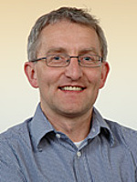
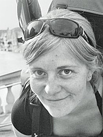

HEAD OF RESEARCH | |
|  | Prof Andreas Kappler
Andreas Kappler's group focuses on the interactions of microorganisms and iron-minerals in modern and ancient environments. These interactions also largely determine the fate of harmful organic and inorganic pollutants. Microbial iron-oxidizing and -reducing communities play a key role in iron-mineral formation and transformations. Studying both biological molecular mechanisms and geochemical conditions are crucial to the understanding of these biogeochemical processes. Therefore, we combine microscopic, spectroscopic and molecular techniques with geochemical analysis in order to understand modern and ancient iron biogeochemistry and its environmental impact. Research Topics: #Early earth, #Iron cycling, #Biochar andreas.kappler@uni-tuebingen.de Room S514, Tel: xxxxx |
SENIOR SCIENTISTS | |
 |
Dr James M Byrne
My research focuses on magnetic nanoparticles formed through biological processes. The main goal is the be able to produce tailored particles with constrained properties that might be suitable to a variety of different applications including remediation, data storage or medical treatments. I first moved into the field of geomicrobiology during my PhD at the University of Manchester. Prior to that I did a physics degree. My other interests include Moessbauer spectroscopy, magnetism and electron microscopy. Click here for further information Research Topics: #Biogeobatteries, #Magnetite, #Moessbauer james.byrne@uni-tuebingen.de Room S515, Tel: 75496 |
| Dr Sara Kleindienst
a a a a a a a a a a a a a a a a a a a a a a a a a a a a a a a a a a a a a a a a a a a a a a a a a a a a a a a a a a a a a a a a a a a a a a a a a a a a a a a a a a a a a a a a a a a a a a a a a a a a a a a a a a a a a a a a a a a a a a a a a a a a a a a a a a a a a a a a a a a a a a a a a a a a a a a a a a a a a a a a a a a a a a a a a a a a a a a a a a a a a a a a a a a a a a a a a a a a a a a a a a a a a a a a a a a a a a a a a a a a a a a a a a a a a a a a a a a a a a a a a a a a a a a a a a a a a a a a a a a a a a a a a a a a a a a a a a a a a a a a a a a a a a a a a a a a a a a a a a a a a a a a a a a a a a a a a a a a a a a a a a a a a a a a a a a a a a a a sara.kleindienst@uni-tuebingen.de Room S514, Tel: xxxxx |
|
|  | Dr Caroline Schmidt
a a a a a a a a a a a a a a a a a a a a a a a a a a a a a a a a a a a a a a a a a a a a a a a a a a a a a a a a a a a a a a a a a a a a a a a a a a a a a a a a a a a a a a a a a a a a a a a a a a a a a a a a a a a a a a a a a a a a a a a a a a a a a a a a a a a a a a a a a a a a a a a a a a a a a a a a a a a a a a a a a a a a a a a a a a a a a a a a a a a a a a a a a a a a a a a a a a a a a a a a a a a a a a a a a a a a a a a a a a a a a a a a a a a a a a a a a a a a a a a a a a a a a a a a a a a a a a a a a a a a a a a a a a a a a a a a a a a a a a a a a a a a a a a a a a a a a a a a a a a a a a a a a a a a a a a a a a a a a a a a a a a a a a a a a a a a a a a a caroline.schmidt@uni-tuebingen.de Room S514, Tel: xxxxx |
POSTDOCS | |
|
Dr James M Byrne
a a a a a a a a a a a a a a a a a a a a a a a a a a a a a a a a a a a a a a a a a a a a a a a a a a a a a a a a a a a a a a a a a a a a a a a a a a a a a a a a a a a a a a a a a a a a a a a a a a a a a a a a a a a a a a a a a a a a a a a a a a a a a a a a a a a a a a a a a a a a a a a a a a a a a a a a a a a a a a a a a a a a a a a a a a a a a a a a a a a a a a a a a a a a a a a a a a a a a a a a a a a a a a a a a a a a a a a a a a a a a a a a a a a a a a a a a a a a a a a a a a a a a a a a a a a a a a a a a a a a a a a a a a a a a a a a a a a a a a a a a a a a a a a a a a a a a a a a a a a a a a a a a a a a a a a a a a a a a a a a a a a a a a a a a a a a a a a a james.byrne@uni-tuebingen.de Room S514, Tel: xxxxx |
| Dr Sara Kleindienst
a a a a a a a a a a a a a a a a a a a a a a a a a a a a a a a a a a a a a a a a a a a a a a a a a a a a a a a a a a a a a a a a a a a a a a a a a a a a a a a a a a a a a a a a a a a a a a a a a a a a a a a a a a a a a a a a a a a a a a a a a a a a a a a a a a a a a a a a a a a a a a a a a a a a a a a a a a a a a a a a a a a a a a a a a a a a a a a a a a a a a a a a a a a a a a a a a a a a a a a a a a a a a a a a a a a a a a a a a a a a a a a a a a a a a a a a a a a a a a a a a a a a a a a a a a a a a a a a a a a a a a a a a a a a a a a a a a a a a a a a a a a a a a a a a a a a a a a a a a a a a a a a a a a a a a a a a a a a a a a a a a a a a a a a a a a a a a a a sara.kleindienst@uni-tuebingen.de Room S514, Tel: xxxxx |
|
| Dr Caroline Schmidt
a a a a a a a a a a a a a a a a a a a a a a a a a a a a a a a a a a a a a a a a a a a a a a a a a a a a a a a a a a a a a a a a a a a a a a a a a a a a a a a a a a a a a a a a a a a a a a a a a a a a a a a a a a a a a a a a a a a a a a a a a a a a a a a a a a a a a a a a a a a a a a a a a a a a a a a a a a a a a a a a a a a a a a a a a a a a a a a a a a a a a a a a a a a a a a a a a a a a a a a a a a a a a a a a a a a a a a a a a a a a a a a a a a a a a a a a a a a a a a a a a a a a a a a a a a a a a a a a a a a a a a a a a a a a a a a a a a a a a a a a a a a a a a a a a a a a a a a a a a a a a a a a a a a a a a a a a a a a a a a a a a a a a a a a a a a a a a a a caroline.schmidt@uni-tuebingen.de Room S514, Tel: xxxxx |
|